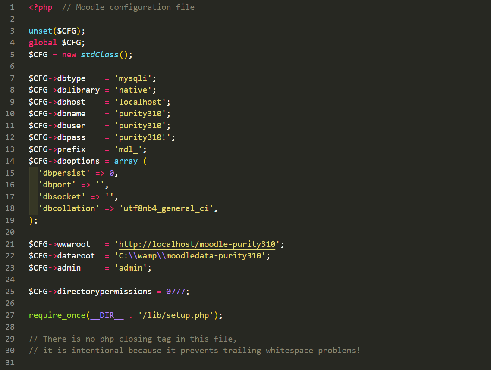

An important decision to make before proceeding with your installation is whether you should use the Existing Installations method, or if you can use the Demo Installation, which will install everything for you.
-
Demo Installation - consists of a full installation of Moodle that installs Moodle itself, the Purity theme, the blocks, the demo content and the database data to match our demo layout.
-
Existing Installations - consists of the packages required to install Purity on an existing Moodle website (the theme and the blocks).
Which installation method you should use depends on the current status of your site. If you are creating a new Moodle site, we recommend you to install Purity by using our Demo Installation package and instructions. If you have an existing Moodle site, please follow the Existing Installations instructions.
Also, before proceeding with the installation, please make sure that you meet the Moodle requirements.
Demo Installation
The Demo Installation consists of a full installation of Moodle that installs Moodle itself, the Purity theme, the blocks, the demo content and the database data to match our demo layout. Have in mind that as this is a full Moodle installation it may only be used on a clean server; the package cannot be installed in an existing Moodle site. It can only be used when you start a new project/website.
Installing the Demo Installation is a fairly simple process. It is basically the same procedure as the official Moodle Migration guide. But anyway, lets write it down with some more details.
1. Create database (and database user)
You need to create a new database (and associate a database user with it) for your Moodle installation. It can be named however you wish.
If you are not sure how to do the above, please contact your Hosting Support and they will assist you with that.
2. Populate database
Import the SQL file, named purityXXX.sql (located in the Demo Installation folder in your theme download package), into your new database. This can be accomplished via phpMyAdmin or other DB management tool.
If you are not sure how to do the above, please contact your Hosting Support and they will assist you with that.
3. Upload files
Upload the purity-demo-files.zip archive (located in the Demo Installation folder) to your web server, and extract it using either cPanel or another file management tool.
Alternatively, you can manually upload the contents of the uncompressed purity-demo-files.zip archive to your web server using an FTP client.
4. Upload moodledata
Upload the moodledata.zip archive (located in the Demo Installation folder) to your web server, outside your web root. Moodle requires that the moodledata folder is not publicly accessible.
Once uploaded, extract it using either cPanel or another file management tool.
Alternatively, you can manually upload the contents of the uncompressed moodledata.zip archive to your web server using an FTP client.
Your web server should have read-write permissions to the moodledata directory. For more details, please check the official Moodle documentation.
5. Configure config.php
You must now configure Moodle's config.php file to reflect your new database credentials and moodledata directory location, so that Moodle can connect to the database.
It is mandatory to complete all of the following steps, in order for your website to work properly.
-
Open the config.php file located in the Moodle root on your web server.
-
On lines 10 to 12, edit the database name, user, and password to match the new database credentials you set up in Step 1.
-
Make sure that the database prefix remains as "mdl_".
-
You may also need to edit the database port and host to match that of your server, and the database collation to match that of the new database you created in Step 1.
-
On line 21, change the website root to your website URL, or your localhost address (e.g. http://localhost/moodle, or http://localhost:8888/moodle). If you specify an incorrect web address your website will not display correctly.
-
On line 22, change the "dataroot" to match the location of the moodledata directory you uploaded in Step 4. This path should be relative to your server root.

6. Login
Your Purity demo installation is complete. You can now go to www.YourSite.com/login/index.php and log in with the following administrator credentials.
USERNAME: admin
PASSWORD: Admin123!
7. Purge the Moodle cache
After logging in, navigate directly to www.YourSite.com/admin/purgecaches.php via your web browser's address bar and click the 'Purge all caches' button.
Wait for the page to refresh and reload completely. Once the page has refreshed and loaded completely, the caches have been succesfully purged.
This process may take several minutes.
Existing installations
The Existing Installations method refers to installing just the theme and the blocks on an existing Moodle website. This means you already have a Moodle website with content items, blocks, plugins, and you just decided that you want to improve its design and functionality.
Make sure that you have a fresh, working backup of your existing Moodle website (files and database) before proceeding.
1. Upload the theme
The standalone theme is located in the 'Existing Installations/theme' folder.
Upload the purity folder to the /theme directory in your Moodle root.
You should now have the standalone Purity theme at this location on your web server: /theme/purity
2. Upload the blocks
Purity comes with many custom blocks to help you create awesome Moodle websites with ease. It is recommended that you install all custom blocks.
The blocks are located in the 'Existing Installations/blocks' folder.
Upload the blocks to your Moodle blocks directory, located at /blocks in your Moodle root.
3. Installation
Once you upload the theme and the blocks you need to actually install them.
-
Log into your Moodle site (as an administrator), and go to Site administration > Notifications (www.YourSite.com/admin/index.php).
-
Scroll to the bottom of the page and click "Upgrade Moodle Database now".
-
Wait for Moodle to install everything. This might take several minutes.
-
Follow the on-screen instructions to complete the installation.
You might be prompted to configure new settings during the installation process. Please scroll down to the bottom of the page and click on "Save".
Upon successful installation, you will be taken to the Site administration > Notifications page.
4. Activate the theme
Navigate to Site administration > Appearance > Themes > Theme selector, and change the default theme to Purity.
Upon successful activation, a "New theme saved" page will be displayed. Click Continue.
5. Configure the theme as it is in the demo
In order to have the same website as the Purity demo you need to configure the layout as it is in the Demo Installation.
Just install the "Demo Installation" package on another location, see how everything is configured and then duplicate it on your original installation.
Almost all elements that you see in the "Demo Installation" are blocks. Therefore you need to add the blocks to the layout and configure them as you wish.
Our Purity theme is based on the default Moodle theme - Boost. It means that whatever you can do in Boost you can also do in Purity. And the way you do things in Boost will be exactly the same in Purity. The way you add blocks in the Boost theme is how you will add the blocks in the Purity theme. For more details, please have a look at this section in the official Moodle documentation.
As you know you add the blocks to block regions. The different themes have different block regions. Please refer to the "Theme Regions" section below for more details about the available blocks in the Purity theme.
For more details on how to edit your Homepage (Front page), please have a look at this section in the official Moodle documentation.